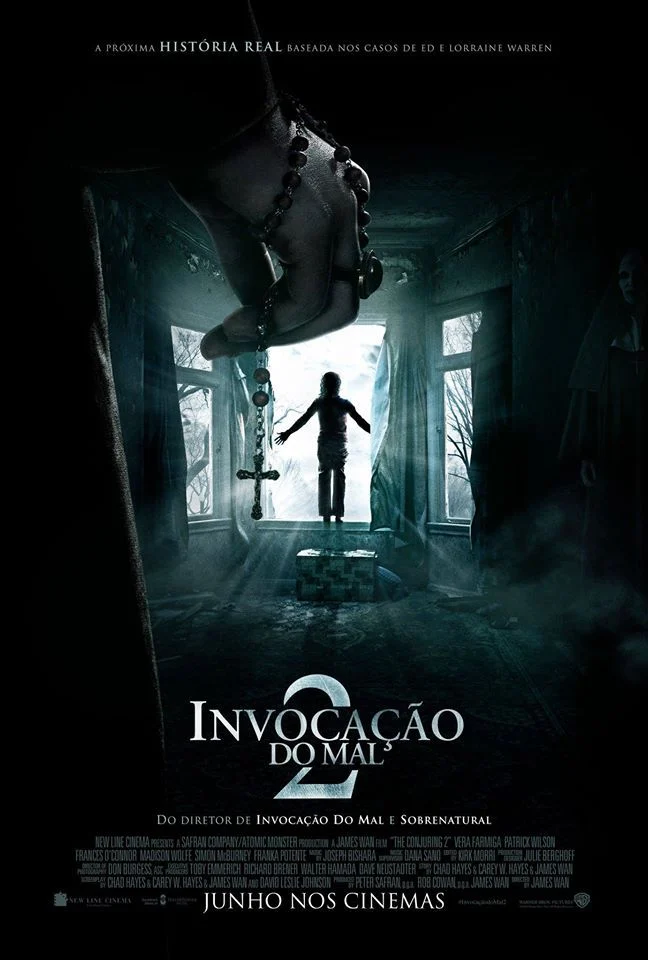
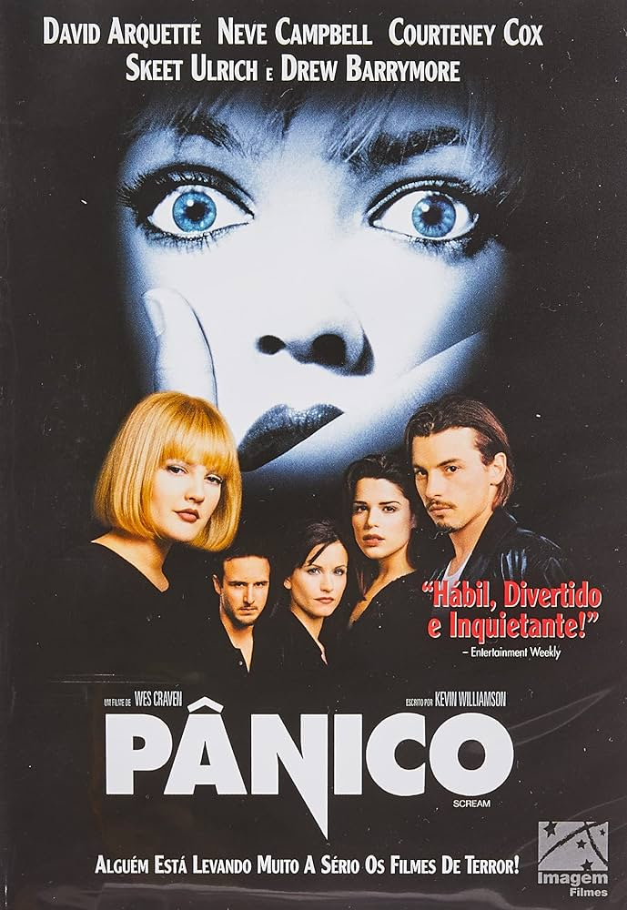
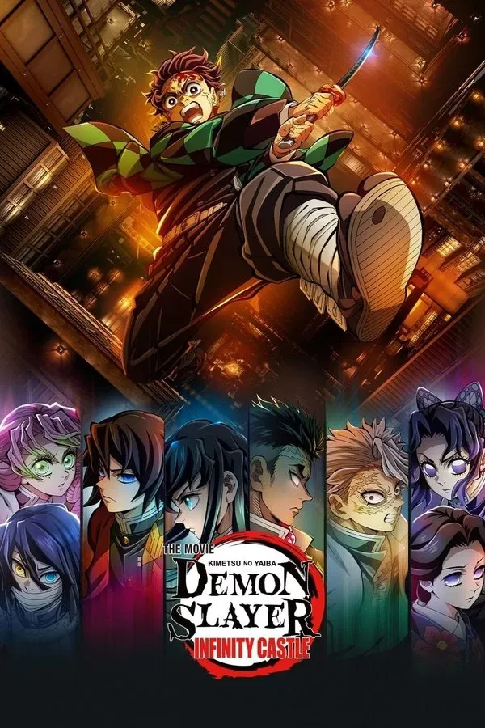

O Meu Ranking Pessoal: A Locadora de Filmes Favoritos
Role para ver os 20 filmes e clique nas opções "Emprestar" ou "Vender" para simular a transação.
Invoção Do Mal 2
1º LugarAinda não vi um filme de terror que supere Invocação do Mal 2, filme perfeito! Há outros MUITO BONS, desde os clássicos aos mais recentes, mas superar este vai tempo ein! A melhor produção de James Wan e acho que até ele mesmo vai demorar para se auto superar. Fez o terror com maestria!!!
Disponível para locação.
Pânico (1996)
2º LugarAssisti esse filme com 9 anos de idade e tudo que pensava no fim do filme,era o mar de sangue que eu tinha acabado de presenciar. Um suspense como tem que ser,sem dar pistas de quem é o assasino ate o final,com uma atuação de neve campbell fantastica em todos os sentidos,um cenario bem escolhido,o climax tudo deu certo nesse que foi um dos melhores filmes dos anos 90.
Disponível para locação.
Demon Slayer - castelo Infinito
20º LugarQue filme MARAVILHOSO!!! O cinema ganhou um novo patamar após DSCI!!! Com um novo conceito inclusive sobre o que merece uma nota 10 de fato!!! O filme é ESPETACULAR em todos os sentidos!!! O melhor filme que eu já vi, até o momento, sem o menor exagero!!! Esse é daqueles filmes os quais temos que ver no cinema, pois em casa NÃO é a mesma imersão. Que trilha sonora estupenda e no timing certo!!! E o enredo? PERFEITO!!! Nunca pensei que eu diria isso, mas na minha humilde opinião, veio para brigar com TODAS as outras obras consideradas as melhores mostrando que tem seu valor e que tem o seu merecido lugar.
Disponível para locação.